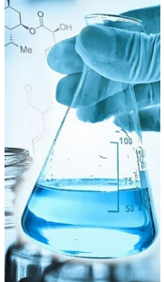

立足行业标准、面向产业需求的专业质量与安全服务平台
检测中心是立足行业标准、面向产业需求的专业质量与安全服务平台。中心占地面积 1800余平方米，构建了涵盖理化分析、精密仪器、微生物检测、感官评价等多功能的现代化实验空间， 为全面、高效的质量控制与安全评估提供了坚实的硬件基础。
中心以"精准、高效、权威"为准则，持续拓展检测能力边界，现已建立覆盖食品、农产品及相关制品的完备检测体系， 具备超过6000项具体检测项目的技术能力，可针对352种以上产品提供符合国家标准及国际规范的全方位质量评估。
点击进入